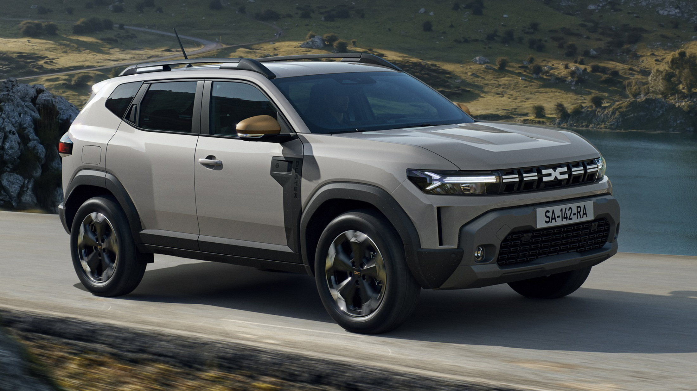

Dacia Duster
- 🔧 Moteur : 1.0L, 1.3L TCe ou Blue dCi – jusqu'à 150 ch
- ⚡ 0–100 km/h : environ 10.2 secondes
- ⛽ Consommation : environ 5.5 l/100km
- 📐 Dimensions : 4.34m x 1.80m x 1.69m
- 🎛️ Équipements : 4x4, Media Nav, caméra de recul, régulateur de vitesse, climatisation automatique
- Our Models
Experience the Dacia Duster
Contact us today to book a test drive or learn more about this tough SUV.
Contact Us